آموزش تصویری گامبهگام «سفارش ساخت»
این سند دقیقاً بر اساس اجرای واقعی سیستم و اسکرینشاتهای گرفتهشده از محیط برنامه تهیه شده تا کاربر بتواند مرحله به مرحله همراه با نقطه دقیق کلیک، فرآیند را دنبال کند.
- ورود به سیستم
- صفحه اصلی پس از ورود
- باز کردن لیست سفارشهای ساخت
- ایجاد سفارش ساخت جدید
- تکمیل شماره سفارش و ذخیره
- مشاهده سفارش ذخیرهشده و دکمه تایید مالی
- تایید مالی سفارش
- تب تاریخچه وضعیت
- تب پیوستها
- تب تاخیرات
- تب تاییدکننده تجهیز
- باز کردن لیست اقلام سفارش ساخت
- ایجاد قلم جدید
- انتخاب کالا برای قلم
- قلم ذخیرهشده و دکمههای گردشکار
- افزودن BOM به قلم
- ثبت تغییر وضعیت تولید
- ثبت درخواست توقف
- صفحه مستقل تاخیرات
- صفحه مستقل تاییدکننده تجهیز
1 ورود به سیستم
آدرس سیستم را باز کنید. نام کاربری و رمز عبور خود را در دو کادر سمت راست وارد کرده و روی دکمه «ورود» کلیک کنید (نقطه مشخصشده با رنگ قرمز).
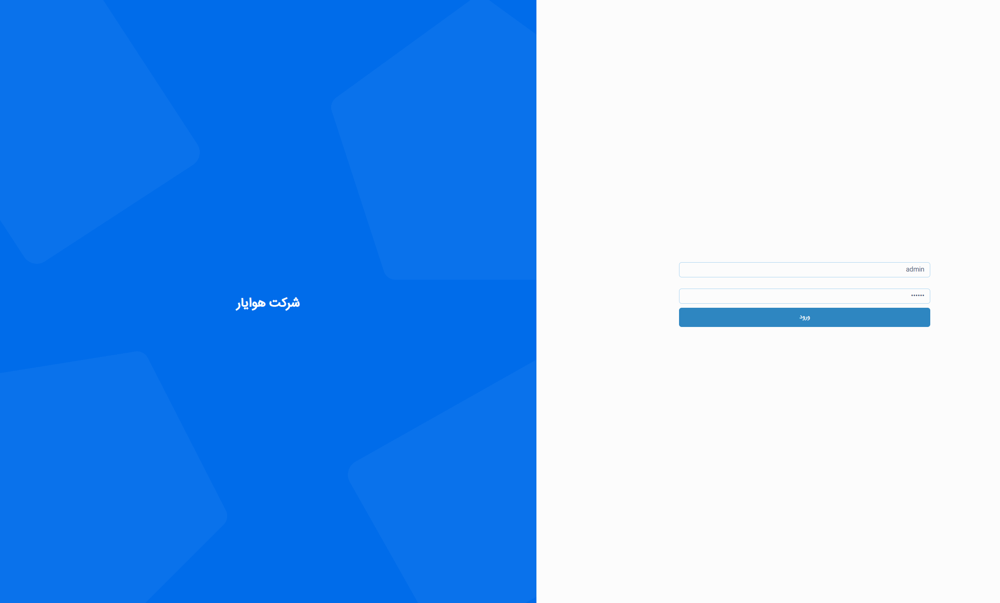
2 صفحه اصلی پس از ورود
پس از ورود موفق، وارد داشبورد اصلی سیستم میشوید. منوی ماژولها در سمت راست صفحه قرار دارد.
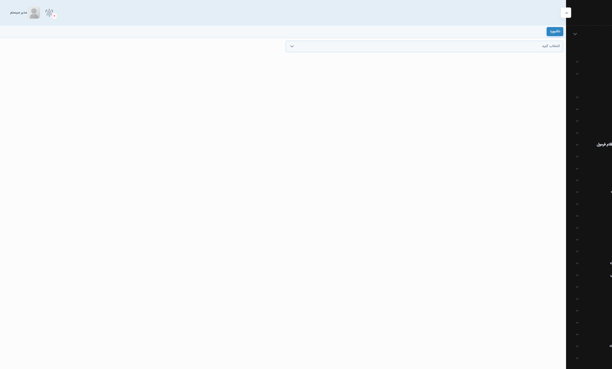
3 باز کردن لیست سفارشهای ساخت
از منو، مسیر فروش ← سفارش ساخت را باز کنید (یا مستقیم به آدرس /Panel/ProductionOrder/List بروید). لیست همه سفارشهای ساخت ثبتشده نمایش داده میشود.
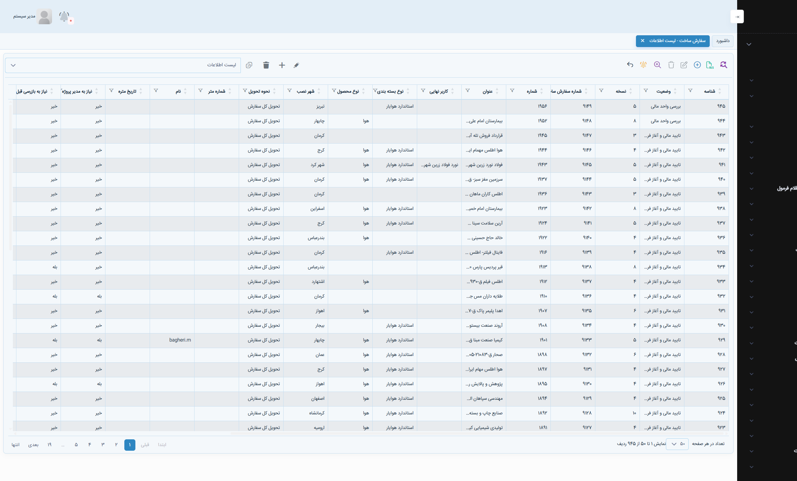
با دابلکلیک روی هر ردیف، صفحه ویرایش همان سفارش باز میشود. برای ثبت سفارش تازه، دکمه سبزرنگ + (جدید) در بالای جدول را بزنید.
4 ایجاد سفارش ساخت جدید
پس از کلیک روی «جدید»، فرم خالی سفارش ساخت باز میشود. در بالای صفحه، تبهای «اطلاعات کلی، تاریخچه، پیوستها، تاخیرات، تاییدکننده تجهیز» و دکمههای عملیات (ذخیره، تایید مالی، منسوخ کردن) قابل مشاهده هستند.
5 تکمیل شماره سفارش و ذخیره
فیلد الزامی «شماره سفارش ساخت» را وارد کنید (سایر فیلدها اختیاری هستند) و سپس دکمه «ذخیره» را در بالای صفحه بزنید.
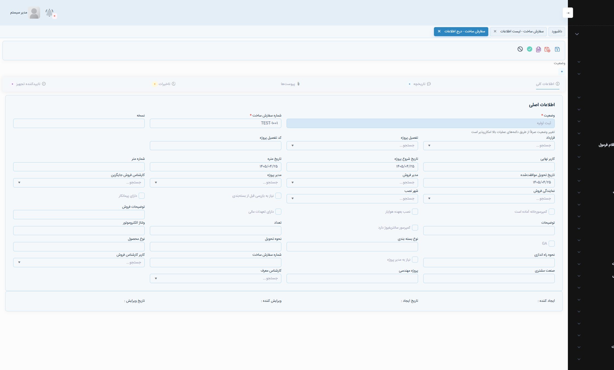
6 مشاهده سفارش ذخیرهشده و دکمه تایید مالی
بعد از ذخیره، شناسه سفارش تخصیص مییابد و اطلاعات ایجادکننده/تاریخ در پایین صفحه نمایش داده میشود. اکنون دکمهٔ «تایید مالی» (آیکون سبز تیک) فعال شده است.
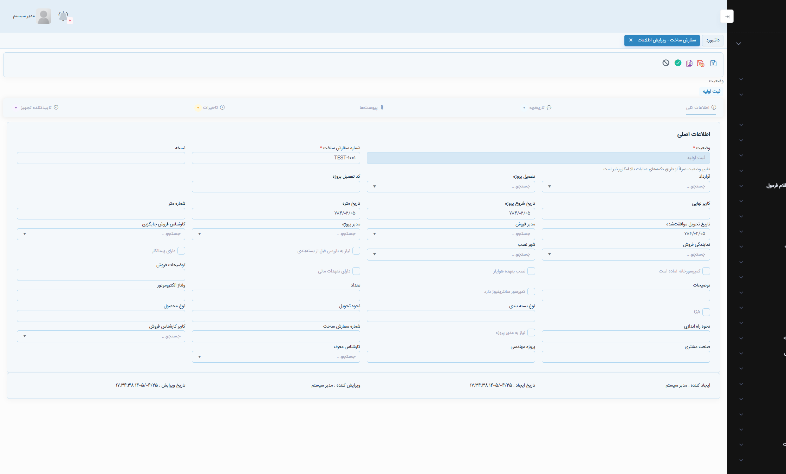
تا زمانی که سفارش ذخیره نشود، هیچکدام از دکمههای گردشکار (تایید مالی، تاخیرات، تاییدکننده تجهیز) فعال نمیشوند.
7 تایید مالی سفارش
با کلیک روی «تایید مالی»، یک پنجرهٔ تایید ظاهر میشود. برای ادامه روی دکمهٔ «بله» کلیک کنید.
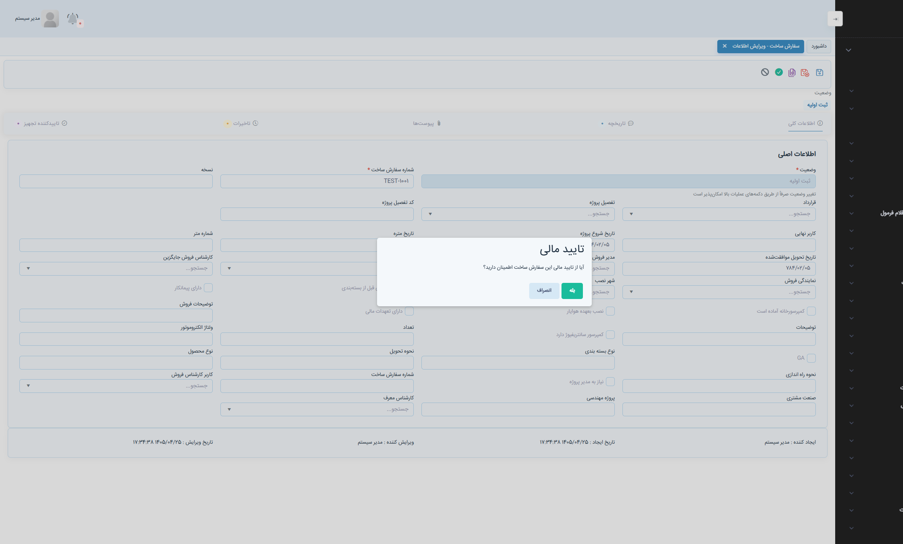
پس از تایید، وضعیت سفارش به «تایید مالی و آغاز فرآیند سفارش ساخت» تغییر میکند و دکمه «تایید مالی» غیرفعال و دکمهٔ «منسوخ کردن» فعال میشود.
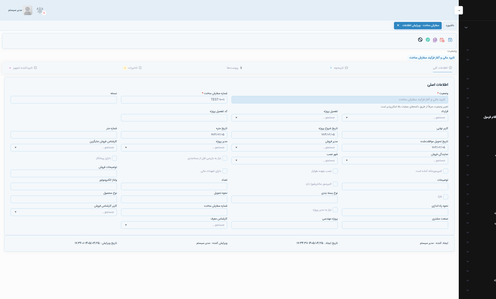
8 تب تاریخچه وضعیت
با کلیک روی تب «تاریخچه» میتوانید تمام تغییرات وضعیت سفارش (وضعیت قبلی/جدید، کاربر، تاریخ) را مشاهده کنید. این تاریخچه بهصورت خودکار توسط عملیات تایید مالی/منسوخ کردن ساخته میشود.
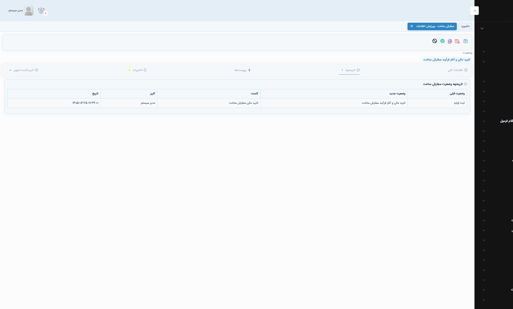
9 تب پیوستها
در تب «پیوستها» میتوانید ۴ فایل مرتبط با سفارش (تایید مدیریت، فاکتور پیشپرداخت، پیشفاکتور، قرارداد) را بارگذاری کنید؛ کافی است فایل را در هرکدام از باکسها بکشید یا کلیک کنید.
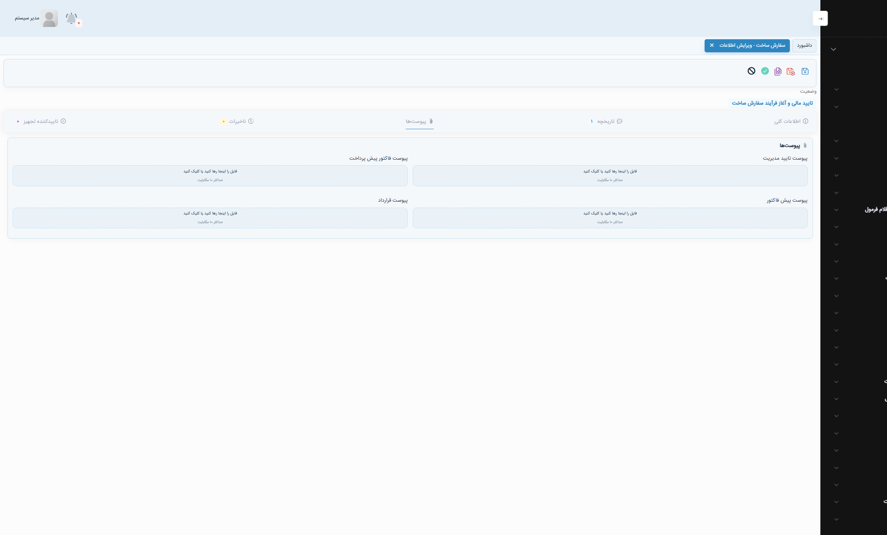
10 تب تاخیرات
در تب «تاخیرات» در ابتدا لیست خالی است. با کلیک روی دکمه «افزودن تاخیر» پنجرهٔ ثبت تاخیر برای یکی از اقلام این سفارش باز میشود.
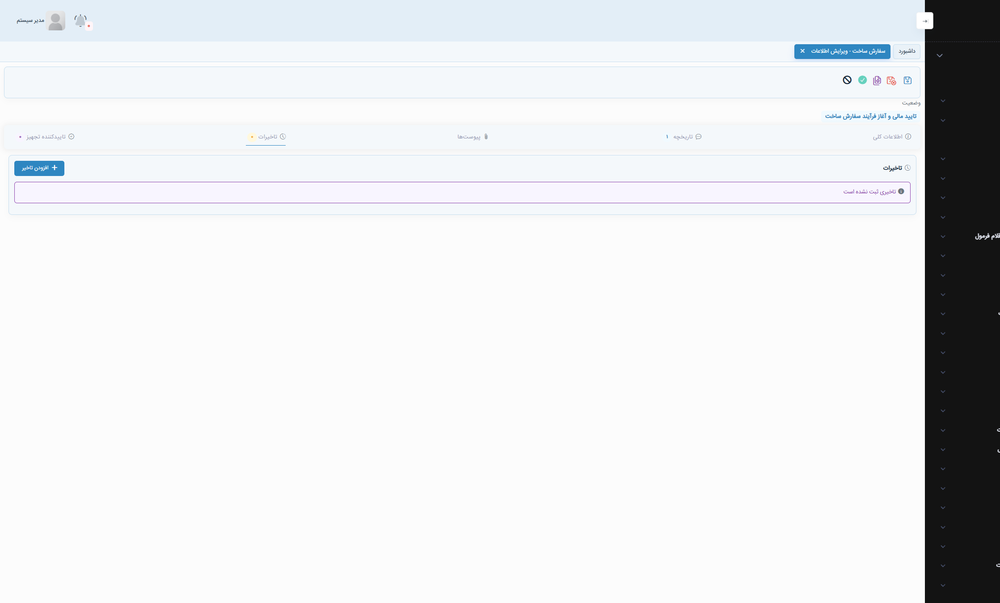
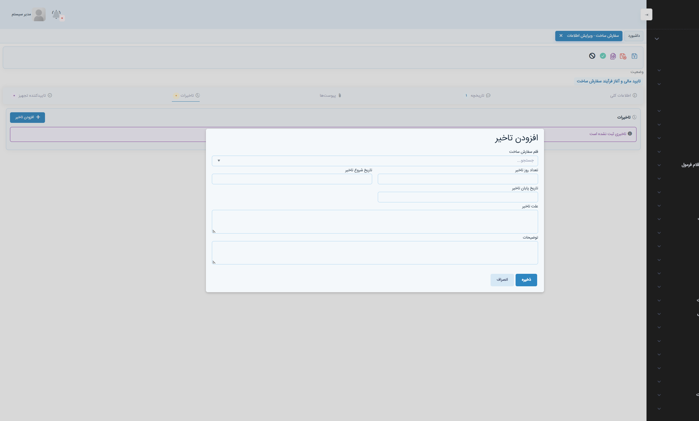
در این فرم باید قلم مربوطه، تعداد روز تاخیر، تاریخ شروع/پایان، علت و توضیحات را وارد کنید.
11 تب تاییدکننده تجهیز
در این تب میتوانید کاربر مسئول تایید نهایی هر تجهیز را مشخص و وضعیت تایید او را ثبت کنید.
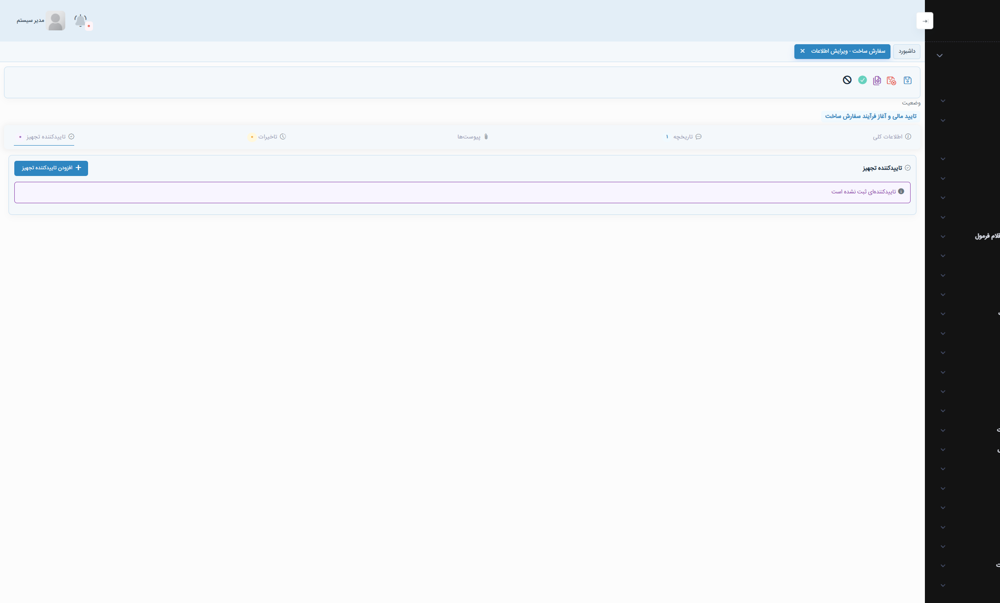
12 باز کردن لیست اقلام سفارش ساخت
از منو مسیر فروش ← اقلام سفارش ساخت را باز کنید (یا آدرس /Panel/ProductionOrderItem/List). این لیست شامل تمام دستگاههای ثبتشده در همهٔ سفارشهای ساخت است.
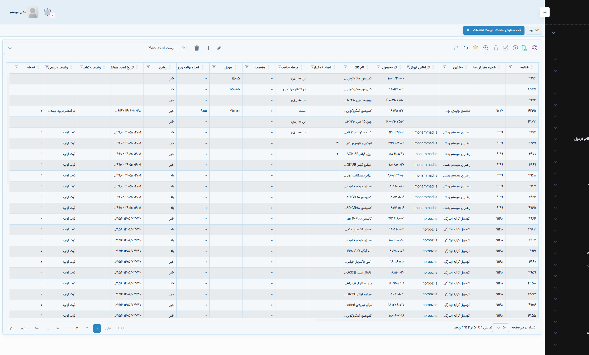
13 ایجاد قلم جدید
پس از کلیک «جدید»، فرم قلم باز میشود. در بالای صفحه، علاوه بر دکمههای ذخیره، مجموعهٔ کاملی از دکمههای گردشکار (تایید/رد مهندسی، تایید صنایع، تایید/رد مدیر پروژه، ارسال به استعلام/وزارت صنایع/کمیته تامین) دیده میشود که همگی در حالت جدید غیرفعال هستند.
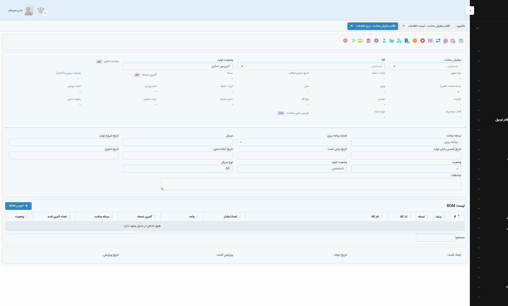
ابتدا باید «سفارش ساخت» مادر را از کادر جستجوی سمت راست انتخاب کنید (با تایپ شماره سفارش، لیست نتایج ظاهر میشود).
14 انتخاب کالا برای قلم
در کادر «کالا» عبارت مورد نظر را تایپ کنید تا لیست کالاهای مطابق نمایش داده شود؛ روی گزینهٔ مورد نظر کلیک کنید.
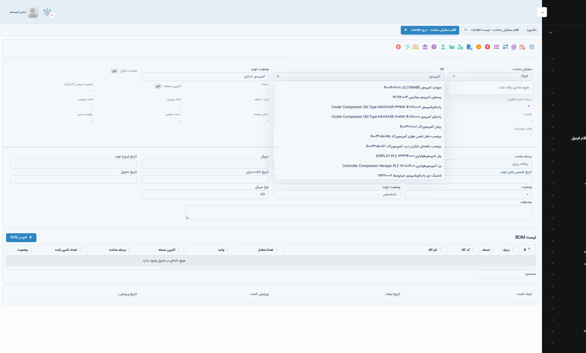
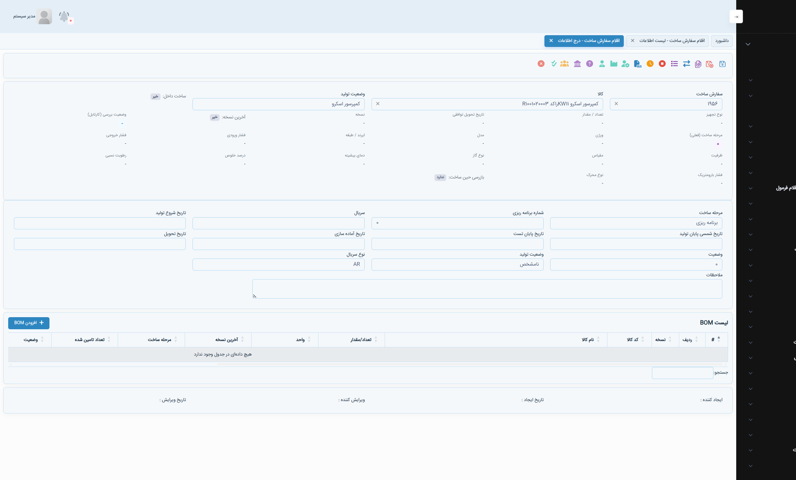
فیلد «وضعیت تولید» (نوع دستگاه) را هم متناسب با کالای انتخابی تعیین کنید؛ این فیلد مبنای مسیریابی خودکار قلم به کارتابل مهندسی مکانیک یا برق است. سپس دکمهٔ «ذخیره» را بزنید.
15 قلم ذخیرهشده و دکمههای گردشکار
بعد از ذخیره، اطلاعات فنی کالا و سفارش مرتبط در بالای صفحه نمایش داده میشود. دکمههای گردشکار (تایید مهندسی/صنایع/مدیر پروژه و ...) تا زمانی که قلم توسط فرآیند مسیریابی خودکار به یکی از کارتابلها فرستاده نشده، غیرفعال باقی میمانند.
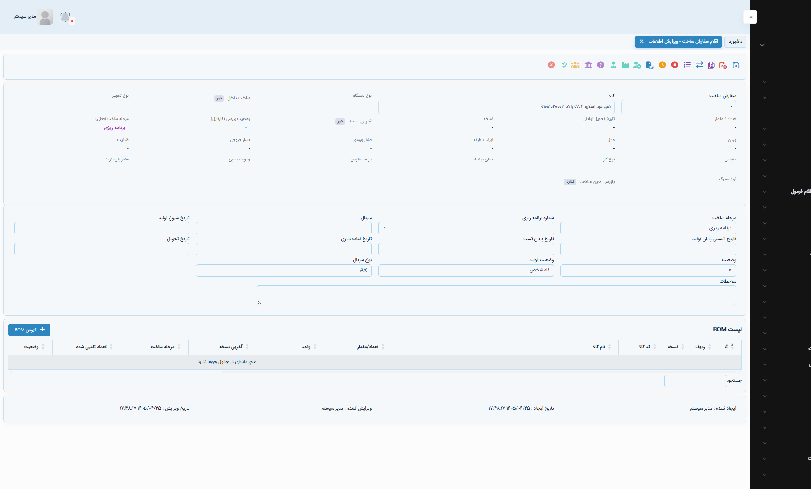
16 افزودن BOM به قلم
در پایین صفحهٔ قلم، جدول «لیست BOM» قرار دارد. با کلیک روی دکمهٔ «افزودن BOM» میتوانید یک قطعه از فهرست ساخت این دستگاه را با تعداد و توضیحات ثبت کنید.
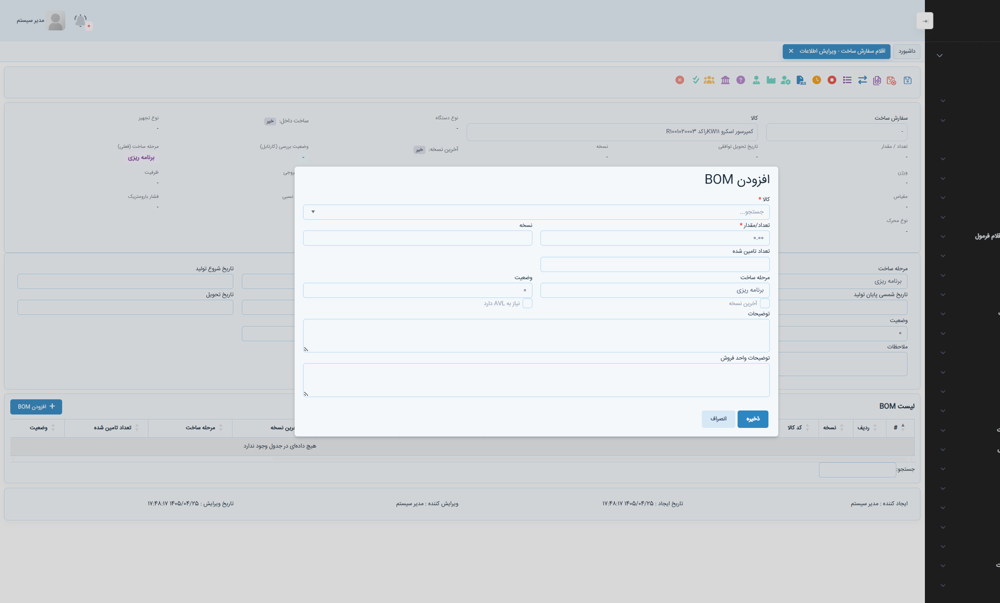
17 ثبت تغییر وضعیت تولید
با کلیک روی دکمهٔ «تغییر وضعیت» در بالای صفحهٔ قلم، میتوانید پیشرفت فیزیکی ساخت (شروع/پایان تولید، تست، بستهبندی و ...) را همراه با تاریخ و توضیحات ثبت کنید.
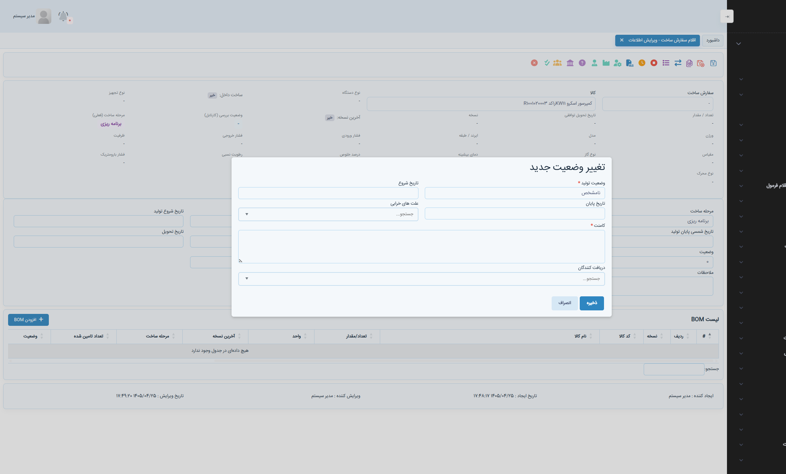
هر بار ثبت تغییر وضعیت، یک ردیف در «تاریخچه تغییر وضعیت» (دکمه کناری) اضافه میشود.
18 ثبت درخواست توقف
اگر تولید قلم به هر دلیل متوقف شد، از دکمهٔ «ثبت توقف» استفاده کنید تا محل، تاریخ، علت و واحد/فرد مسئول توقف ثبت شود.
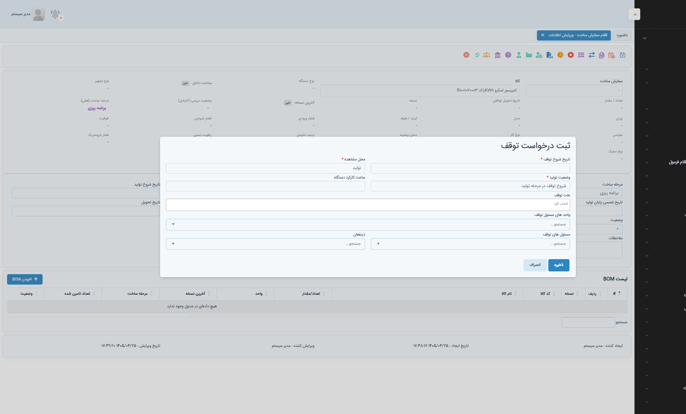
19 صفحه مستقل تاخیرات
علاوه بر تب داخل سفارش ساخت، از مسیر /Panel/ProductionOrderDelay/List نیز میتوانید همهٔ تاخیرات ثبتشده در کل سیستم را بهصورت یک لیست مستقل مشاهده و مدیریت کنید.
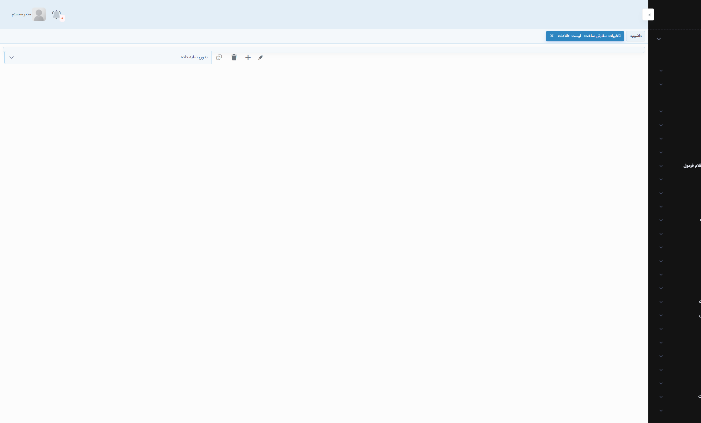
20 صفحه مستقل تاییدکننده تجهیز
مشابه بالا، از مسیر /Panel/ProductionOrderEquipmentConfirmer/List لیست کامل تاییدکنندههای تجهیز در کل سیستم قابل مشاهده است.
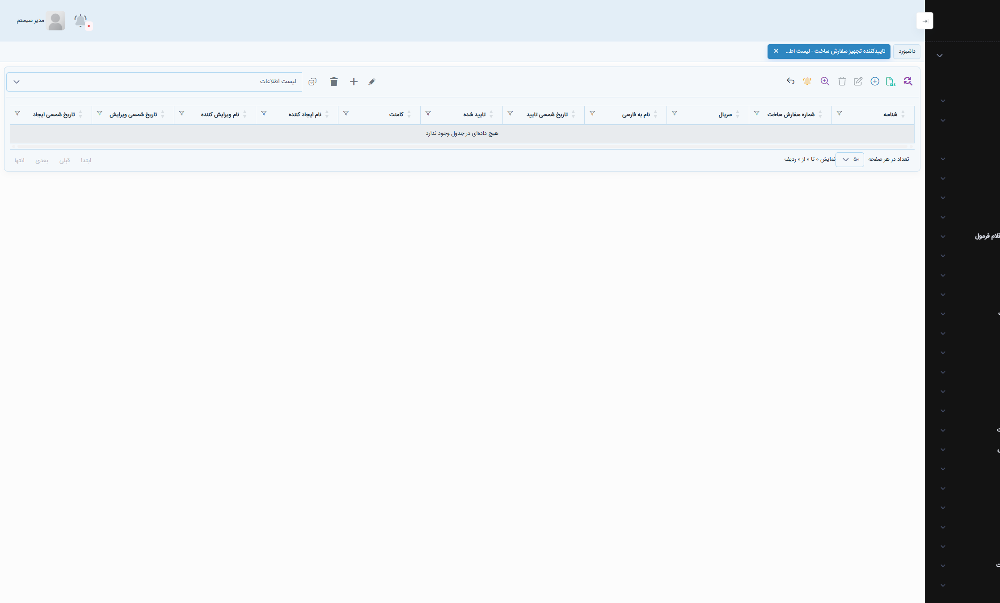
i نکتهٔ مهم دربارهٔ فعالشدن دکمههای گردشکار
دکمههای تایید/رد مهندسی، تایید صنایع،
تایید/رد مدیر پروژه، ارسال به استعلام/وزارت صنایع/کمیته تامین
فقط زمانی برای کاربر دارای نقش مربوطه فعال میشوند که «وضعیت بررسی (کارتابل)» قلم دقیقاً منطبق با آن مرحله باشد.
این انتقال بین کارتابلها معمولاً بهصورت خودکار توسط یک فرآیند زمانبند پس از «تایید مالی» سفارش انجام میشود
(جزئیات کامل نقشهٔ گردشکار و جدول نقشهای مورد نیاز هر دکمه در سند
ProductionOrderUserGuide.html آمده است).